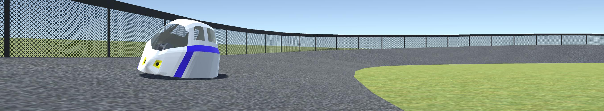
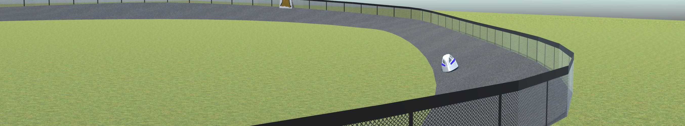

HPV Simulator 2.0 has just been released, with lots of new features and bug fixes.
If you did not know already, try pressing "M" while playing.
Improvements and features are expected to include:
- Can select which vehicle to drive (under the Options menu on the home screen)
- Maryborough level now looks and behaves slightly better.
- Introduced some marshals to flip the trike the right way up when it rolls.
- Added a new level
- Bug fixes such as the inner wall in the Maryborough actually behaving as a wall and not a catapult.
Welcome to the HPV Simulator
You have just found the website for the HPV Simulator - the best game you will ever find.
Here you can pointlessly drive a virtual Human Powered Vehicle around for as long as you like.
Human Powered Vehicles are recumbant tricycles equiped with an aerodynamic shell.
They are much faster and more energy efficient than normal two wheeled bicycles.
The HPV Simulator is a small game made with the Unity Game Engine. Feel free to download the sourcecode and modify it to suit your needs and platforms.
The game was put together in Unity 2017.1.1f1.

Changelog
HPV Simulator 2.0 Feb 2018
Released February 2018
- Can select which vehicle to drive (under the Options menu on the home screen)
- Maryborough level now looks and behaves slightly better.
- Introduced some marshals to flip the trike the right way up when it rolls.
- Added a new level
- Bug fixes such as the inner wall in the Maryborough actually behaving as a wall and not a catapult.
HPV Simulator 2.0 Beta Jan 2018
Released January 2018
- New models
- Maryborough level - Not yet finished (anyone wanting to finish it for me?)
- Bug fixes such as the trike not shaking around as much